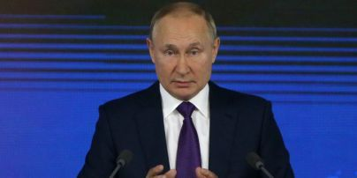

Путін змушений змінити тактику: Жданов пояснив, чому Росія атакує цивільну інфраструктуру
Путіну будь-що потрібне перемир’я, припинення вогню за будь-яку ціну.
Військовий експерт Олег Жданов пояснив, що російські війська завдають ударів по цивільній інфраструктурі України, адже диктатор Володимир Путін готує для себе переговорну позицію.
Про це Жданов сказав у ефірі "Лучшее Радио Израиль".
Експерт зазначив, що Путіну потрібні переговори для встановлення перемир’я через проблеми у війні.
"Путін готує переговорну позицію для себе. Йому будь-що потрібне перемир’я, припинення вогню за будь-яку ціну. Він буде добиватися цього всіма доступними йому засобами та силами. Тому що мобілізація не рятує, мобілізовані несуть величезні втрати, і це лише збільшує кількість втрат на лінії фронту. Наші війська хоч і повільно, але уперто просуваються вперед", – пояснив Жданов
Розуміння цього всього та спроба сформувати силову переговорну позицію змушують Путіна змінити тактику, додав експерт.
"Він призначив нового командувача Суровікіна. Він ще командувач повітряно-морськими силами Росії, ніхто його з цієї посади не знімав. І він одразу запровадив свої улюблені методи – те, що він застосовував в Алеппо. Єдине, тут він килимових бомбардувань влаштувати не може, зате ракетні удари і удари дронами-безпілотниками – вони у нього в пріоритеті", – розповів Жданов.
Чому Росія завдає масованих ударів по Україні